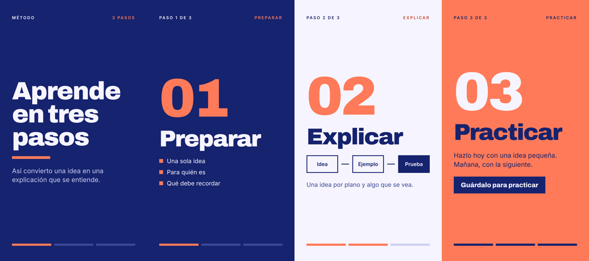

Las cinco preguntas, palabra por palabra. Mira el karaoke, repítelas en voz alta y ordénalas de memoria hasta que salgan solas.
Parte A: el original del vídeo, palabra por palabra. Parte B: añadidos nuestros para el equipo Lifeplus. Nunca se mezclan.
La idea: «Cuando un cliente te pone una objeción, el error es responderla. El acierto, ya te digo, que es preguntarle.»
| El cliente dice | Lo que no haces | Tu pregunta | Por qué funciona | |
|---|---|---|---|---|
| P | «Tengo que pensármelo» | «No le des más información, ni le repitas lo que ya has contado.» | «Perfecto. Y aparte de pensarlo, ¿hay algo concreto que te genere duda?» | «Esa pregunta saca la objeción real, la que estaba escondida detrás del «tengo que pensármelo».» |
| C | «Es muy caro» | «No lo justifiques.» | «¿Comparado con qué?» | «Si no sabe responder, no tiene una objeción real, tiene una sensación. Y una sensación se puede reencuadrar.» |
| S | «Lo tengo que hablar con mi socio» | «A veces es verdad, eh, y está bien.» | «Si tu socio estuviera aquí ahora mismo escuchando esta conversación, ¿qué crees que te preguntaría?» | «Esa pregunta te da la objeción de una persona que ni siquiera estaba en la conversación, que ni siquiera estaba en esa reunión.» |
| I | «Mándame más información» | «La gente pide información cuando no está segura, cuando le falta información.» | «Claro. ¿Qué esperas encontrar ahí que no hayamos hablado hasta ahora?» | «La respuesta te dice exactamente qué le falta por resolver.» |
| M | «Ahora no es un buen momento» | «Nunca lo es.» | «¿De verdad no es el momento, o hay algo más que hace que ahora mismo no se sienta como el momento correcto?» | «El tiempo casi nunca es el problema real.» |
Cierre: «No respondas la objeción: pregúntala. La respuesta que te dé el cliente vale más que cualquier argumento que tú puedas preparar.»
Fuente: @alfonsoychristian (TikTok). Sacada de los subtítulos del vídeo; solo se han cambiado puntuación y números en letra. En la pregunta 5, «no es el momento» va corregido por Peter (los subtítulos automáticos decían «es el momento»), y se quita la repetición «no se… no se».
Cómo memorizarlo: la regla de las 3 repeticiones
Truco para el orden: P-C-S-I-M → Pensármelo · Caro · Socio · Información · Momento.
Situaciones para ensayar en parejas (uno hace de cliente; las preguntas se dicen exactamente igual que en la Parte A)
| Situación | El «cliente» dice | |
|---|---|---|
| P | Has explicado un pack de productos básicos a una persona interesada. | «Tengo que pensármelo» |
| C | Le has enseñado el precio mensual del pedido. | «Es muy caro» |
| S | La persona decide las compras de casa con su pareja (puedes decir «tu pareja»). | «Lo tengo que hablar con mi socio» |
| I | Le has presentado la oportunidad de negocio. | «Mándame más información» |
| M | Está a punto de empezar el reto o su primer pedido. | «Ahora no es un buen momento» |
En la 3 se puede decir «tu pareja» en lugar de «tu socio». Regla de equipo: en las prácticas no se habla de beneficios de salud ni se prometen resultados. El ejercicio es preguntar y escuchar.
Cómo enseñarlo en una formación de 30 minutos
| Minuto | Qué haces |
|---|---|
| 0–3 | Pones el vídeo karaoke completo, sin decir nada. |
| 3–8 | Preguntas al grupo: «¿Qué hacíais hasta hoy cuando os decían "es muy caro"?» Escuchas. |
| 8–18 | Las 5 páginas del PDF: lees la objeción y el grupo responde la pregunta en voz alta, 3 veces. |
| 18–27 | Parejas con las situaciones de ensayo. Cambian de papel a mitad. |
| 27–30 | Cada persona dice de memoria las 5 preguntas en orden P-C-S-I-M. Cierre: «No respondas la objeción: pregúntala.» |
Pon el vídeo en tus formaciones (horizontal, sin voz) y reparte el cuaderno para practicar en parejas.
Cómo crear b-roll, carruseles y vídeos con Claude. No forma parte del vídeo de objeciones: es material aparte para usar y enseñar.
La idea en una frase: el diseño de Claude decide cómo se ve la pieza (fotogramas en un lienzo). HyperFrames la mueve y la convierte en MP4. Los dos usan HTML y CSS, así que colores, tipos y medidas pasan de uno a otro sin rehacer nada.
| Herramienta | Qué es | Cuándo usarla |
|---|---|---|
| Motion de Claude (lienzo de diseño) | Animación creada visualmente, sin código | Bocetar y enseñar una idea en movimiento |
| HyperFrames | Cada vídeo es una página web que un comando renderiza a MP4 | Producir: b-roll, rótulos, gráficos, estilos de la biblioteca |
| Remotion | Lo mismo, programado en React; licencia de pago para empresas grandes | Solo para fabricar muchos vídeos con plantilla a partir de datos |
Basta una frase: qué pieza es, de qué trata y para quién. El resto lo decide Claude y lo explica.
Si los tienes, añade el texto exacto, la ruta de fotos o logo y cuántas versiones quieres comparar.
npx hyperframes render.Vertical 9:16, 8 segundos. Es un borrador de prueba.

Skill para repetirlo: storyboard-a-hyperframes.
Frases originales de @alfonsoychristian (TikTok), sin cambios. Tu progreso se guarda solo en este navegador.